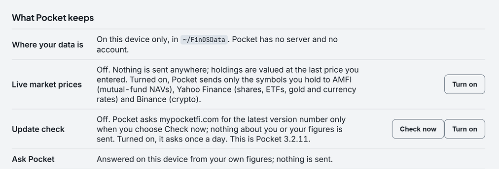

Security architecture

1. Threat model
Pocket is built against the ways financial data is lost at scale:
- Server breaches: no Pocket server, and no copy of your data beyond your devices and your backup folder.
- Harvesting and resale: no telemetry, no analytics library, no advertising and no account.
- Network interception: the only requests carry market symbols, a version check, an encrypted file or your phone's Wi-Fi traffic, each off until you switch it on (section 9).
- Someone at your computer: a PIN locks the pages and the API; the vault and backups need your passphrase.
Outside the model: malware running as you, or someone with your unlocked computer or an unencrypted disk. No desktop app can defend a compromised system (section 10).
2. How data moves
This computer
You, in Pocket's window or your browser
Pocket 127.0.0.1:8765, this computer only
FinOSData folder database · vault · backups · audit log
- OffPrice services symbols only
- Offmypocketfi.com the latest version number
- OffA folder you choose an encrypted copy
- OffYour phone, on your Wi-Fi paired once
3. Where your data lives
Everything you enter is stored in one SQLite database, with a vault folder beside it, in FinOSData
in your user folder. Pocket never sends it anywhere. Copy, back up or delete it like any file; deleting it removes your data for good.
Database encryption (Windows, since 3.2.8, when you turn it on): Pocket encrypts its database and every backup copy with SQLCipher 4 (AES-256, page by page) under a random 256-bit key. The key is kept twice beside your data: under your Windows account (DPAPI), so Pocket opens with no prompt; and under a recovery passphrase you choose (scrypt, then AES-256-GCM), needed only on another computer or after a reinstall. A lost passphrase cannot be recovered. Turning it on encrypts into a new file, checks every table has the same rows, and only then replaces the plain one.
Honest detail: it is off until you turn it on, and on macOS and Linux Pocket does not yet encrypt its database: your account and disk encryption protect it. Use BitLocker, FileVault or full-disk encryption everywhere. Android always encrypts its database (SQLCipher, key in the phone's secure storage).
4. Document vault (Founder Pro)
- Key: your passphrase through scrypt (n=214, r=8, p=1) with a fresh random 16-byte salt per file, giving a 32-byte key. scrypt is memory-hard, so guessing is expensive.
- Encryption: AES-256-GCM with a fresh random 12-byte nonce per file. GCM is authenticated: a tampered file or wrong passphrase fails. Files written by earlier builds (Fernet) still open and are re-sealed with AES-256-GCM the next time.
- Nothing to recover from: the passphrase and key are never stored. A lost passphrase means a lost document.
- What stays readable: each document's name, label, size and date, so the vault can list them. Rename a sensitive file before adding it. Up to 10 MB a file.
5. Encrypted backup (Founder Pro)
- A backup copies the database with SQLite's online backup (safe while Pocket runs), then seals it with the vault's scheme under your passphrase.
- The result is an encrypted copy to a folder you choose: one file,
vestora-sync.enc. If the folder is one your Dropbox, OneDrive or Google Drive app syncs, that app uploads a file it cannot read. Pocket runs no sync server and holds no key. - Restoring takes the newest copy after a safety copy of the current database. It is free on every plan.
- Local backups before an import or risky change follow the database: encrypted when it is, plain when it is not.
6. App lock and your phone
- The PIN is never stored: a scrypt hash with a random salt lives in the database and is checked by Pocket itself, never in the browser. With a PIN set, Pocket sends the lock page instead of any page, the API answers nothing until the PIN opens a session, and the session ends after 15 minutes without use.
- Biometric unlock on the phone view uses the operating system's own credential check (WebAuthn): Pocket never sees a fingerprint or a face.
- Your phone: off until you choose “Let my phone open Pocket”. Pocket then listens on a second port at this computer's Wi-Fi address, and only a phone paired through a link that works once, for ten minutes, gets past it. Turning it off forgets the paired phones.
7. The local app server
- Pocket's pages are served by a small server bound to 127.0.0.1, which other machines cannot reach.
- It answers only requests addressed to it by name (a defence against DNS rebinding), refuses requests another site's page makes in your browser, and accepts changes only as JSON, which another site cannot send without asking first.
- An optional token can be required on every request, compared in constant time.
- Each change is logged beside your data: its kind, never what you typed.
8. Imported statements are untrusted
A bank statement is written by someone else, so every field in it (payees, descriptions, categories) is treated as untrusted input. Pocket's interface is a web page, and text from a file must never become code running beside your financial data.
- Page text is HTML-escaped, so markup in a payee's name shows as characters.
- Text handed to a script is encoded so it cannot end the script.
- Text in a button's action is escaped for JavaScript, then HTML, the order the browser undoes them.
- A mutual-fund statement's password is typed by you, used to open the file and never stored or logged.
Each has a test that fails when the protection is removed, and a browser probe tries known injection payloads.
9. Every network connection, listed
| Connection | Off until | Exactly what is sent |
|---|---|---|
| Live market prices: Yahoo Finance | You say yes; Pocket asks once | Each holding's symbol: an Indian share or ETF with .NS (NIFTYBEES.NS), a US share
(AAPL), GC=F for gold and INR=X for the dollar rate. Never names,
quantities or balances. US shares go to Finnhub instead only if a Finnhub key is set on the computer. |
| Live market prices: AMFI | The same switch | GET https://www.amfiindia.com/spages/NAVAll.txt: the whole day's NAV list. Your fund is found
in it on your computer, so nothing about it is sent. |
| Live market prices: crypto | The same switch | GET https://data-api.binance.vision/api/v3/ticker/price?symbol=BTCUSDT. If Binance does not
answer, Hyperliquid's public price list ({"type": "allMids"}), which names no coin. |
| Update check | You choose Check now, or turn on the daily check | GET https://mypocketfi.com/latest.json with the user agent Pocket. The answer is
believed only if it is small, a three-part version and points at mypocketfi.com. |
| Encrypted backup | You set it up (Founder Pro) | No request: one encrypted file written to the folder you choose. That folder's own sync app may upload it. |
| Your phone | You choose “Let my phone open Pocket” | Your paired phone's own requests, on your Wi-Fi, to a listener on this computer. Nothing to the internet. |
| Claude (hosted AI) | Not in the download | Nothing. Pocket's source can ask Claude when Anthropic's library is installed and a Claude API key is set on the computer; the build on the Download page has no such library. The request it would make. |
That is the complete list. There is no telemetry, no crash reporting and no analytics; licence keys are checked on your computer (section 11); the app loads nothing from another site, fonts and charts included, and a test fails if it ever does. This website makes no request to another site either.
Check this website yourself. Open your browser’s developer tools (F12, or Command-Option-I on a Mac), choose Network and reload the page. Look at where each request goes (the Domain column, or hover a row): every one is mypocketfi.com. The home page counts the same requests as it loads, and says how many went anywhere else.
10. What is not protected: read this
- The database is not encrypted at rest unless you turn that on, on Windows (section 3). On macOS and Linux it is not encrypted by Pocket at all. Use disk encryption.
- A compromised computer defeats everything. Malware running as you can read what you can read. While Pocket runs, its database is open to it.
- Vault names, labels, sizes and dates are readable by design (section 4).
- Memory is not specially hardened beyond what the operating system gives every process.
- The builds are not code-signed yet. Download only from the Download page and check the file's SHA-256 against the one it gives.
- No independent security audit has been done. This page is Pocket's own account, checked against the source code.
11. Licence keys
A paid plan is a key signed with Ed25519. Only the public key ships in the app, so a key that verifies came from Pocket's signer. The check runs on your computer: no activation server and no phone-home. A signed list of revoked keys ships with the app, the plan's day never goes back with the computer's clock, and a key past its term drops the app to Free, which keeps all your data.
12. Reporting a vulnerability
Email support@mypocketfi.com with the subject SECURITY; the address is also in security.txt. A person answers. Please allow a reasonable time for a fix before you publish; you are credited in the release notes, or kept anonymous, as you choose. There is no bug bounty.
13. Change history
| Version | Released | What changed here |
|---|---|---|
| 3.2.8 | 11 Oct 2026 | Database encryption on Windows, off until you turn it on (section 3). |
| 3.2.7 | 11 Oct 2026 | The update check, off until you ask (section 9). |
| 3.2.6 | 11 Oct 2026 | On Windows, Pocket opens in its own window; a link that leaves 127.0.0.1 opens in your browser. |
| 3.2.3 | 10 Oct 2026 | Winding the clock back no longer extends a trial or revives an expired plan (section 11). |
| 3.2.1 | 6 Oct 2026 | No plan sells AI; Pocket has no connection to Claude (section 9). |
| 3.1.0 | 5 Oct 2026 | Mutual-fund statements, opened with a password you type, which Pocket never stores (section 8). |
Every release's full notes are in the changelog.